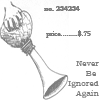
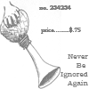

|
Authors
Mike Alexander a native New Yorker turned Houstonian by love & marriage, dreams too hard about 19th century Paris, handles money without any of it sticking to him, edits a small Houston litmag called The Panhandler, admins the online sonnet workshop at http://p197.ezboard.com/bthesonnetboard, & uses ampersands.
Mark Allinson was born in 1947 and raised in Melbourne, Australia. At first Mark believed that he wanted to be an airline pilot, and he completed a private flying licence at 17. Before long, however, he realized that flying was merely a metaphor of his desire to rise above the pettiness of daily life, in order to see the big picture. Eventually this desire for vertical transcendence led to a Ph.D in English literature, and he taught for a while at Monash University, in Melbourne. Mark is now entirely grounded, and living and writing on the NSW coast, south of Sydney.
D. C. Andersson was educated at Oxford University and then The Warburg Institute, London. He edits the new poetry magazine Tempo and his own work has appeared in numerous UK magazines in the last year.
Tiel Aisha Ansari, is a Sufi, martial artist, and computer programmer living in the Pacific Northwest. Her poetry has appeared in Islamica Magazine and Barefoot Muse and is forthcoming in Mythic Delirium and Shit Creek Review, among others.
David Gwilym Anthony is a British businessman and a Fellow of the Royal Society of Arts. His second poetry collection, Talking to Lord Newborough, was published in the United States by Alsop Review Press in 2004. This is his website: http://www.davidgwilymanthony.co.uk/ .
Jon Ballard is an occasional literature and writing instructor for Oakland Community College in Royal Oak, Michigan. He received his B.A. and M.A. from Oakland University. His work has appeared or is forthcoming in Boxcar Poetry Review, The Valparaiso Poetry Review, Blue Earth Review, and Boston Literary Magazine among many others. A chapbook, Lonesome, is due from Pudding House Publications in 2007. Currently he lives in Mexico City, Mexico.
Rachel Bunting is a born and bred South Jersey girl currently living between the Delaware River and the Pine Barrens. Her work can be found in Mad Poets Review, Journal of New Jersey Poets, US1 Worksheets, The Barefoot Muse and Wicked Alice. She likes sushi, acupuncture, and Tony Hoagland. She is a terrible dancer.
Louie Crew a native of Alabama, is a retired Rutgers professor. Crew has written 1,814 published poems and essays, including four poetry volumes: Sunspots (Lotus Press, Detroit, 1976) Midnight Lessons (Samisdat, 1987), Lutibelle's Pew (Dragon Disks, 1990), and Queers! for Christ's Sake! (Dragon Disks, 2004). He and his husband Ernest Clay live in East Orange, NJ. Louie's website: http://andromeda.rutgers.edu/~lcrew/.
Brian Dion's work has appeared in Candelabrum and the Raintown Review and he was a runner-up for the 2005 Grolier Poetry prize. He is active in his local Community Theatre and recently won the best supporting actor award at the Eastern Massachusetts Association of Community Theater's Drama Festival He lives near the banks of the Saugus river with his wife and daughter.
Arthur Durkee is an award-winning composer, photographer, poet and essayist. His creative work has been featured in numerous group and solo shows, print and online media, and dozens of musical recordings. He has a special interest in book arts and publishing, including illustration, typography, design, craft, and related arts. Site: http://www.arthurdurkee.net/
Brent Fisk is a three time Pushcart nominee with recent work in Willow Review, The Alembic, and Rattle among other places. He is currently working on several chapbooks and his first full-length poetry collection.
Angela France lives in Gloucestershire and is enjoying middle age. She runs a local live poetry event - 'Buzzwords' - and writes for self-indulgence, as an antidote to demanding work with challenging young people. She has had poems published in, or forthcoming in: Acumen, Iota, The Frogmore Papers, Rain Dog, The Panhandler, The Shit Creek Review, Voice and Verse, and in anthologies The White Car, Mind Mutations and When Pigs Chew Stones. More on Angela at poetry pf.
Eve Anthony Hanninen's work has appeared in The Barefoot Muse, The HyperTexts, Mannequin Envy, Southern Hum, Nisqually Delta Review, ForPoetry, and elsewhere. Several poems are also slated to appear in two print anthologies later this year. Recently, she was guest speaker on The Writer's Craft for the It's About Time Writer's Reading Service, in Seattle. Eve is the Editor of The Centrifugal Eye Online Poetry Journal.
Christopher Hanson: A musician all his life and an English teacher by trade, Christopher lives on the edge of nowhere, in Orange, NSW, Australia with his wife and little girl. His work has previously been published in WORM, and he is a regular at Sonnet Central.
Janet Kenny has metamorphosed from painter to classical singer to anti-nuclear activist, researcher, writer, illustrator and poet. Started in New Zealand and zigzagged across the globe to finally settle in Australia. She has published fairly widely as a poet. Some of her poetry can be found at her website.
Don Kimball lives in Concord, NH. His poetry has appeared in The Edge City Review, The Formalist, Iambs & Trochees, The Lyric, The Blue Unicorn, and various other journals. In 2007, he won first prize in the national contest sponsored by the Poetry Society of NH. His poems also appear in four anthologies, the two most recent ones being The Powow River Anthology and The Other Side of Sorrow.
Danielle Lapidoth lives with her husband and children in Zurich, Switzerland, where she runs an editing business, teaches English and writes poetry, flash fiction and essays while her family sleeps. She has work published or forthcoming in Lily: A Monthly Literary Review, Barnwood, flashquake, Apple Valley Review, Literary Mama and Mamaphonic.
Ralph La Rosa’s poems have appeared in various journals, including The Lyric, Pivot, Italian Americana, Aethlon, Light Quarterly, Folly (online), Umbrella (online), First Things, The Raven Chronicles (forthcoming) and Raintown Review (forthcoming).
Quincy Lehr was born in Oklahoma and currently lives in Dublin, Ireland.
Rob A. Mackenzie lives in Edinburgh. His chapbook collection, The Clown of Natural Sorrow, was published in 2005 by HappenStance Press (www.happenstancepress.com). He publishes poetry regularly in UK literary magazines, and performed at the StAnza International Poetry Festival 2007 in St Andrews, Scotland.
Mary Ann Mayer lives in Sharon, Massachusetts. Her first book of poems, Telephone Man, was published in 2005. Her work has appeared in two anthologies and several journals, and is forthcoming in Raven Chronicles, The Bryant Literary Review, and the ezine Umbrella. Before turning to poetry, she practiced occupational therapy for thirty years.
Mary Meriam’s first book of poems, The Countess of Flatbroke (Modern Metrics, 2006), features an afterword by Lillian Faderman and a cover design by R. Nemo Hill. In 2006, Mary was awarded Honorable Mention in Poetry by the Astraea Foundation. Her poems and essays are published (or forthcoming) in Literary Imagination, Light, The Barefoot Muse, and Umbrella, among others.
John Milbury-Steen Served in the Peace Corps in Liberia, West Africa. Did a Master's in Creative Writing with Ruth Stone at Indiana University, Bloomington, Indiana. Worked as an artificial intelligence programmer in Computer Based Education at the University of Delaware. Currently teaches English as a Second Language at Temple University, Philadelphia. His poetry has been published in The Beloit Poetry Journal, Hellas, The Blue Unicorn, Kayak, The Listening Eye, The Neovictorian/Cochlea, The Piedmont Literary Review, Scholia Satyrica and Shenandoah.
JBMulligan JBMulligan has had poems and stories in dozens of magazines, including recently, Autumn Sky, Mystic Prophet, Animus, Doorknobs & Bodypaint, Starry Night Review, Poetry Midwest and Colere. He has had two chapbooks: The Stations of the Cross and THIS WAY TO THE EGRESS, and appeared in the anthology Inside Out: A Gathering of Poets.
Rick Mullin is a writer and a painter who started writing poetry avidly in college in the 70s but later learned that journalism pays more. As the poetry slipped in the ensuing years, painting filled the creative void. Mullin has returned to writing poetry with the youthful ardor of his so-called “Romantic Period,” but with much more life and art experience to draw from. Much of his work is autobiographical, nearly all is metrical.
Tim Murphy was the featured author in the debut issue of II, The Shit Creek Review's little sister.
Kirk Nesset is the author of Paradise Road (short stories, University of Pittsburgh Press), The Stories of Raymond Carver (nonfiction, Ohio University Press), and Alphabet of the World: Selected Works by Eugenio Montejo (translations, Bucknell University Press, forthcoming). He was awarded the Drue Heinz literature prize in 2007 and has received a Pushcart Prize and numerous grants from the Pennsylvania Council on the Arts. His stories, poems and translations have appeared in The Paris Review, Ploughshares, The Southern Review, The Kenyon Review, Agni, Gettysburg Review, Iowa Review, The Sun, Fiction, Prairie Schooner and elsewhere. He teaches creative writing and literature at Allegheny College. Kirk's website: http://webpub.allegheny.edu/employee/k/knesset/.
Fintan OHiggins is a writer from Dublin. He has written scripts for soap operas, plays for theatre and films for cinema, but only the first of these has made him any money. He is hoping to find in poetry a sure-fire way to quick bucks.
Cami Park does most of her writing at a desk, some of it in bed, but none of it, ever, at the kitchen table. The results can be found in publications such as Smokelong Quarterly, Forklift, Ohio, edifice WRECKED, FRiGG Magazine, No Tell Motel, and Opium Magazine.
Rose Poto's s work has appeared in various online and print magazines.
Joseph S. Salemi teaches in the Department of Classical Languages at Hunter College. C.U.N.Y. His poems, essays, translations, book reviews, and scholarly articles have appeared in over 100 print journals world-wide. He is a N.E.H. scholar, a winner of the Classical and Modern Literature Prize, and a four-time finalist for the Howard Nemerov Award. He has published three books of poetry, the latest being Masquerade (Pivot Press).
Peter Schwartz is the editor of eye and the associate art editor of Mad Hatter's Review. His artwork can be seen all over the Internet but specifically at: www.sitrahahra.com. His paintings have been published on such sites as HiNgE, Sutble Tea, and Mastodon Dentist. His paintings are in the print journals Orange Coast Review, Whiskey Island, and The Louisiana Review to name a few. He has over 200 poems published in such journals as Porcupine, Vox, and Sein und Werden. His fiction has been published on such sites as Pindeldyboz and Dogmatika. His last exhibition was through Aesthetica Magazine and featured a projection of one of his digital paintings on a busy street in York, UK. Currently he is working on paintings for an exhibit at the Amsterdam Whitney Gallery in Chelsea NYC.
Janice D. Soderling who lives in Sweden, was awarded first prize in Glimmer Train Short Fiction, summer 2006. Her work is currently on-line at Innisfree and The Barefoot Muse and archived at Beloit Poetry Journal. She is represented in printed literary journals and anthologies of several countries including the 1986-7 and the 1997 editions of Anthology of Magazine Verse & Yearbook of American Poetry. Janice received the 2007 stipend from the Foundation for Artistic and Creative Women (Sweden). She has translated the poetry of Heidi von Born.
Tony Williams lives in Sheffield, UK. His work has appeared in The Times Literary Supplement, Anon, The Rialto, Avocado and The Interpreter’s House and is represented in the anthology Ten Hallam Poets (Mews Press, 2005).
Artists
Hanka Jaskowska is a 21 year old living in Cheltenham, Gloucestershire.
She is currently studying Art and Design, taking the first steps in fulfilling
an ambition of a career in prop-making and sculptural costume for theatre/screen.
One of her primary hobbies is photography, within which she can be often
be found being looked at strangely for finding interest in the less interesting things.
C. D. Russell has an itchy shutter finger and is patiently persuading her camera to lie. She prefers to photograph cows.
|

 
